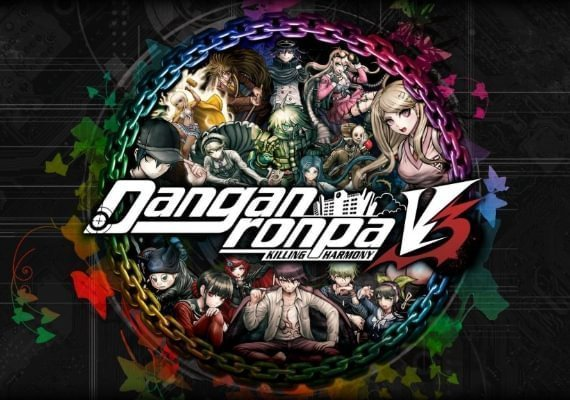
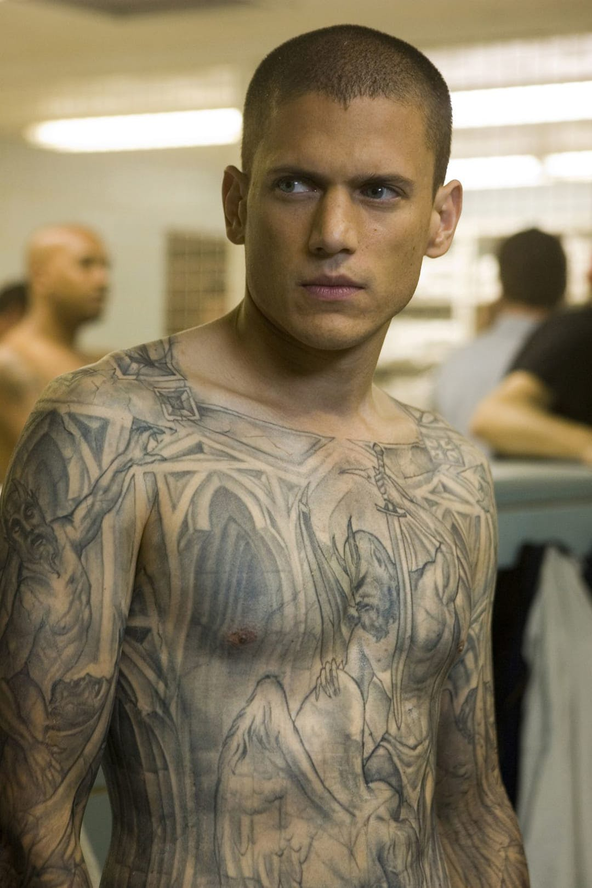

Introduction
Here you will find out lots about me such as...
3 Video game Series i like, A TV show i really like and an anime that i really love, etc.
These also are reccomendations to go and play/watch them since they are really worth your time.
3 Game series I really like and a quick TLDR why (In order)
#1 Persona, The franchise that makes your in game friends feel like real friends.
Each persona game 1-5 provides a brand new experience with a whole new character and a new group of friends you make along the journey.
You possess a power that allows you to summon a persona, a magical being that you can use to cast magic spells.


#2 Danganronpa, The franchise that will make you immersed into the world and its characters to uncover who has killed who.
The game franchise is about a high school class who are all involved in a class killing game. Thier way to escape is to kill and survive the class trial.
A class trial is similar to a normal law trial but with all the classmates discussing it in a room.

#3 Devil May Cry, a franchise that will make action hack and slash fans wish they had more.
This game franchise focuses on mechanics, the game consists of the player stylishly killing demons while unfolding a small plot in the story.
There are loads of moves and includes lots of aerial combat, the newest edition Devil may cry 5 uses a new arm mechanic that the player can switch with to create combos.


3 Music recomendations from me and they are really worth a listen!
My favourite TV show and why it's so good - Prison Break
Prison break is one of a kind TV show and i've never seen anything like it before. The story consists of a younger brother intentionally putting himself into prison to break out his older brother.
The plot though is the fact that the younger brother is actually a structural engineer and he was the one who made the structural blueprints to that prison.
Before he puts himself into the prison he gets a full body tattoo that looks normal at first but is actually the prison blueprints if you look closely, this is to aid his escape.
The reasonm this TV show is so good is because the characters are so likable and his plan always takes a wrong turn and you always want to see what he does to put his plan back on track.
My favourite anime and why it's so good - My Hero Academia
When i first heard about this i didnt think much of it, but after watching all the seasons twice i now know why its so good.
This anime is about a world where everyone has thier own personal powers called "quirks". People are born with these powers and they go to school where they can learn how to use them effectivly.
Expect for the main character who always wanted one but is born without one, he then meets his childhood hero and he obtains a the most powerful quirk, all for one,
All for one is a quick that allows him to use any part of his body at exceedingly high strength, and with this he then competes in exams against his classmates.
This anime is so good because something is always happening, keeping the viewer engaged at all times. And because of that this anime takes my favourite.

.
.